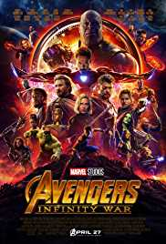

MOVIES CHARACTERS UPCOMING MOVIES TV SERIESGAMESPLAYPlay my game

4/4/2018
10:30:27 PM
Tony Stark. Genius, billionaire, playboy, philanthropist. Son of legendary inventor and weapons contractor Howard Stark. When Tony Stark is assigned to give a weapons presentation to an Iraqi unit led by Lt. Col. James Rhodes, he's given a ride on enemy lines. That ride ends badly when Stark's Humvee that he's riding in is attacked by enemy combatants. He survives - barely - with a chest full of shrapnel and a car battery attached to his heart. In order to survive he comes up with a way to miniaturize the battery and figures out that the battery can power something else. Thus Iron Man is born. He uses the primitive device to escape from the cave in Iraq. Once back home, he then begins work on perfecting the Iron Man suit. But the man who was put in charge of Stark Industries has plans of his own to take over Tony's technology for other matters.
After surviving a deadly gamma radiation accident, scientist Bruce Banner travels the world in search for a cure to his inner force of rage that turns him into a massive green monster known as the Hulk. Though he is close, Banner must watch out because the malevolent General Ross and his team are searching for him and want to use his condition for military weaponry. Running out of time and options, Banner turns to his old flame Betty Ross for help. Meanwhile, a new threat rises as a power hungry soldier turns into a deadlier and more terrifying beast that can match even the Hulk's powers.
Now that Tony Stark has revealed to the world that he is Iron Man, the entire world is now eager to get their hands on his hot technology - whether it's the United States government, weapons contractors, or someone else. That someone else happens to be Ivan Vanko - the son of now deceased Anton Vanko, Howard Stark's former partner. Stark had Vanko banished to Russia for conspiring to commit treason against the US, and now Ivan wants revenge against Tony - and he's willing to get it at any cost. But after being humiliated in front of the Senate Armed Forces Committee, rival weapons contractor Justin Hammer sees Ivan as the key to upping his status against Stark Enterprises after an attack on the Monaco 500. But an ailing Tony has to figure out a way to save himself, get Vanko, and get Hammer before the government shows up and takes his beloved suits away. And can he figure out what a mysterious figure named Nick Fury wants with him?
After wanting to wage war against the Frost Giants, the mighty warrior Thor is cast out from Asgard by his father Odin and sent down to Earth. With no way home and his hammer Mjolnir lost, Thor struggles to reclaim his powers. Meanwhile on Asgard, Thor's devious brother Loki had seized the throne and seeks to help the Frost Giants reclaim their glory. With help from scientist Jane Foster and her team, Thor must learn the true virtue of being a hero and return home to stop Loki and save Asgard from destruction.
During World War 2, Steve Rogers tries to enlist but is repeatedly rejected for his frail and sickly condition, however a scientist notes his determination and allows him to be accepted. What Steve doesn't know is that this scientist is in charge of a government project to create super soldiers, in which Steve is to be the first, but the colonel in charge of the project can't see what the scientist does in this scrawny runt - a strong inner character. Meanwhile, Johann Schmidt, head of a German science division known as HYDRA, knows this scientist and fears the success of his project in America. It could mean trouble for the Germans, so he sends a man to infiltrate and see if it's a success, and "take care" of the scientist if it is. It is, and he does, but not without Steve and his new abilities chasing him down. With the doctor dead, no more American supermen will be forthcoming, and Steve quickly becomes a mere U.S. war drive propaganda tool called "Captain America." His role is useful, if undignified, but he soldiers on with it dutifully till hearing of his best friend's unit's capture, for which he promptly heads out to rescue them. During this rescue, he meets the diabolical Schmidt, and the two become each other's arch nemesis.
S.H.I.E.L.D. has located the mysterious Tesseract device and the Army's super soldier Captain America. The Tesseract is actually a gateway to an entirely new world called Asgard. A mysterious being known as Loki arrives on earth and immediately assumes that he can rule all human beings. But that irks S.H.I.E.L.D. director Nick Fury the wrong way. As Loki escapes with the Tesseract, Nick Fury believes this is an act of war against Earth. His only hope is to assemble an actual team of super heroes. Dr. Bruce Banner, who turns into an enormous green rage monster known as the Hulk. Tony Stark and his venerable Iron Man armor. Captain America, the Stark Enterprises created super soldier. Thor, the god of thunder, protector of Earth and his home planet of Asgard, and Loki's brother. Master assassins Hawkeye and Natasha Romanoff. Together they will become a team to take on an attack that will call them to become the greatest of all time.
The events of Loki's attack on New York City has left Tony Stark a completely changed man. Now saddled with a severe case of insomnia and post traumatic stress disorder, Tony spends his sleepless nights the only way he knows how - coming up with new prototypes for the Iron Man suit. But now new events require that Tony suit up again. A villainous mad man known only as the Mandarin has staged a horrible attack on the Chinese Theater in Los Angeles, and is coming for Tony. An angry Tony wants to confront the Mandarin face to face, who proceeds to stage an attack on Tony's Malibu mansion and leaves him with absolutely nothing - no Pepper, no toys except for a defunct Iron Man prototype called the MK42, and he's stranded in the middle of Tennessee. Tony believes the attack on the Chinese Theater and an attack on a small town in Tennessee are related. As he puts the pieces together and tries to get the MK42 working, he discovers far more sinister forces at work greater than the Mandarin himself. But how does an event from Tony's past fit in with the events of the present?
Thousands of years ago, a race of beings known as Dark Elves tried to send the universe into darkness by using a weapon known as the Aether. Warriors from Asgard stop them but their leader Malekith escapes to wait for another opportunity. The warriors find the Aether and since it cannot be destroyed, they try to hide it. In the present day, Jane Foster awaits the return of Thor although it has been two years since they last saw once another. In the meantime, Thor has been trying to bring peace to the nine realms. Jane discovers an anomaly similar to the one that brought Thor to Earth. She goes to investigate, finds a wormhole, and is sucked into it. Back on Asgard, Thor wishes to return to Earth but his father, Odin refuses to let him. Thor learns from Heimdall, who can see into all of the realms, that Jane disappeared. Thor then returns to Earth just as Jane reappears. However, when some policemen try to arrest her, an unknown energy repulses them. Thor then brings Jane to Asgard to find out what happened to her. When the energy is released again, they discover that when Jane disappeared, she crossed paths with the Aether and it entered her. Malekith, upon sensing that the time to strike is now, seeks out the Aether. He attacks Asgard and Thor's mother Frigga is killed protecting Jane. Odin wants to keep Jane on Asgard so that Malekith will come. Thor disagrees with his plan, so with his cohorts, he decides to take Jane away. He enlists the aid of his brother, Loki. Unfortunately, Loki's motivations remain unknown.
Steve Rogers is coming to grips with living in modern America after being frozen in ice for 50 years. A new threat against S.H.I.E.L.D. arises called "The Winter Soldier". While the origins of the Winter Soldier are unknown, the threat against S.H.I.E.L.D. from the Hydra organization is. Especially after it compromises Nick Fury and Agent Romanoff, leaving them betrayed and left for dead, and their S.H.I.E.L.D. status revoked, marking them as traitors to the organization. Now racing against time with very little resources available at his disposal, Captain America launches an investigation into S.H.I.E.L.D.'s origins and that has him returning to the very Army base where he once underwent basic training nearly 100 years ago. What he and Romanoff discover there leads to a very startling development with S.H.I.E.L.D., a top secret project called "Operation Insight", and the launch of the next generation of Helicarrier. Can they stop it before it's too late?
Marvel’s Guardians of the Galaxy expands the Marvel Cinematic Universe into the cosmos, where brash adventurer Peter Quill finds himself the object of an unrelenting bounty hunt after stealing a mysterious orb coveted by Ronan, a powerful villain with ambitions that threaten the entire universe. To evade the ever-persistent Ronan, Quill is forced into an uneasy truce with a quartet of disparate misfits — Rocket, a gun-toting raccoon; Groot, a humanoid tree; the deadly and enigmatic Gamora; and the rage/revenge-driven Drax the Destroyer. But when Peter discovers the true power of the orb and the menace it poses to the cosmos, he must do his best to rally his ragtag rivals for a last, desperate stand — with the galaxy’s fate in the balance.

The Avengers raid a Hydra base in Sokovia commanded by Strucker and they retrieve Loki's scepter. They also discover that Strucker had been conducting experiments with the orphan twins Pietro Maximoff, who has super speed, and Wanda Maximoff, who can control minds and project energy. Tony Stark discovers an Artificial Intelligence in the scepter and convinces Bruce Banner to secretly help him to transfer the A.I. to his Ultron defense system. However, the Ultron decides that is necessary to annihilate mankind in order to save the planet, attacks the Avengers and flees to Sokovia with the scepter. He builds an armature for self-protection and robots for his army and teams up with the twins. The Avengers go to Clinton Barton's house to recover, but out of the blue, Nick Fury arrives and convinces them to fight against Ultron. Will they succeed?

Scott Lang, an engineer who committed a crime he felt that was justified, is sent to prison. When he gets out he wants to be on the straight and narrow for his daughter but having a record doesn't help. And his ex-wife refuses to let him see his daughter because he can't find a regular job. Eventually his friend tells him of a job and he decides to take it. Scott has to break into a vault and when he does all he finds is a weird suit. After he takes it, he puts it on and discovers it shrinks him. Scott tries to return it and when he does he's arrested, A man claiming to be his attorney goes to see him and he tells him that the suit was an opportunity which he should have taken. Later some ants bring him the suit and he puts it on and gets out of jail. He then goes to the man who says he's Hank Pym the man who created the suit. He used it before and called himself Ant-Man. He gave it up when he found out people were planning to use his technology for things he doesn't think is right so he made sure no one could replicate it and put it away. But he now needs Scott to be Ant-Man because it seems like his protégé, Darren Cross, who forced him out of his company, is close to replicating it. So he wants Scott to get into the lab and take it. Scott is uncertain if he can do it and Pym's daughter who thinks she should be the one to go agrees. But Pym thinks Scott is the one. So they train him while trying to make sure Cross doesn't suspect anything.
When politicians and world leaders think that people like Captain America and Iron Man are running amok, they tell them they need to be regulated. Tony Stark, Iron Man thinks it's necessary. While Steve Rogers, Captain America doesn't think so. That eventually splits their team, The Avengers. At a UN gathering where the regulations are being worked out, there's an explosion and some people are killed among them is the King of Wakanda. Investigation reveals that the bomb was planted by the Winter Soldier, who is Bucky Barnes, Captain America's friend during the war. Everyone is out to get Barnes and kill him if necessary but Steve wants to get to him first and help him. When he finds him he says he didn't plant the bomb, suddenly another person shows up who's out to get him dressed in black. When security forces catches up to them they are arrested and the one in black is revealed to be the son of the Wakandan King, T'Challa and he is the Black Panther the guardian of Wakanda. While in custody, a psychiatrist is sent to evaluate Bucky but suddenly the power goes out that's when he begins to say some words that have an effect on Bucky. He breaks out and Steve tries to get him. Believing that Bucky is innocent Steve sets out to find the man who got to him. Tony is told that because Steve helped Bucky he is now also wanted. He offers to bring him in so he asks War Machine ,and Black Widow to join him. He recruits someone to help him while Widow offers T'Challa to join them. Steve brings Falcon with him who gets Ant Man and Steve calls Hawkeye who gets Wanda whom tony has under lock and key under the eye of Vision. They get away and Vison joins tony. Eventually they all have a confrontation.
In New York, the arrogant Dr. Stephen Strange is a talented neurosurgeon with a huge ego. After a car accident, Dr. Strange damages his fingers and loses control of his hands. The surgeon, Christine Palmer, who was his lover, tries to help him. But Dr. Strange unsuccessfully spends his savings searching for an experimental treatment for his fingers. When Dr. Strange learns that the paraplegic Jonathan Pangborn walked again, he seeks him out and is told he was healed in Kamar-Taj. Dr. Strange travels to Katmandu where he meets the sorcerer Mordo and is introduced to The Ancient One. She discloses the astral plan and other dimensions to him and explains that Earth is protected in the mystical plan by three Sanctums (in New York, London, and Hong Kong). However, her former protégé, Kaecilius, has contacted the powerful demon Dormammu in the Dark Dimension and wants to destroy the three Sanctums with his minions to let the Dark Dimension, where time does not exist and anyone can live forever, to rule the world. Will The Ancient One, Dr. Strange and Mordo save the world?
The Guardians of the Galaxy are hired by the leader of the well-planned Sovereign race Ayesha to destroy a monster to protect their valuable batteries. Peter Quill, Gamora, Drax, Rocket and Baby Groot defeat the monster and receive the notorious Nebula, who is Gamora estranged sister, as previously agreed to receive the bounty offered for her. However Rocket steals a couple of batteries and their spacecraft is attacked by the Ayesha and Sovereign. Out of the blue, the Sovereign fleet is destroyed by a mysterious ship and the Guardians crash on a planet. Soon they learn that the ship that helped them is owned by Ego, who claims to be Quill's father and invites Quill to visit his planet. He goes with Gamora and Drax while Rocket fix their space craft with Baby Groot and Nebula cuffed to debris. They head to the planet and Gamora and Drax Befriend the empathetic Mantis while Quill learns from the celestial Ego that he has powerful abilities. Meanwhile Ayesha hires the outcast Ravager Yondu Udonta, who raised Quill, to hunt down the Guardians for them.
A young Peter Parker/Spider-Man begins to navigate his newfound identity as the web-slinging super hero Spider-Man. Thrilled by his experience with the Avengers, Peter returns home, where he lives with his Aunt May, under the watchful eye of his new mentor Tony Stark. Peter tries to fall back into his normal daily routine - distracted by thoughts of proving himself to be more than just your friendly neighborhood Spider-Man - but when the Vulture emerges as a new villain, everything that Peter holds most important will be threatened.
Four years after defeating the Dark Elves and two years after the fight in Sokovia, Thor now finds himself trapped on the other side of the universe on the wacky planet of Sakaar. Meanwhile, a new threat rises as the evil Hela, Goddess of Death takes over Asgard and plans to conquer the universe. In order to get home, Thor must compete in a gladiator match against the defending champion of the Grandmaster. Little does Thor know is that the champion is his old friend and fellow Avenger, the Incredible Hulk. Teaming with Hulk and his deceptive brother Loki, Thor must return home to Asgard in time to stop Hela and prevent the approaching Ragnarok, the apocalyptic destruction of Asgard.
Follows T'Challa who, after the death of his father, the King who of Wakanda, returns home to the isolated, technologically advanced African nation to succeed to the throne and take his rightful place as king. But when a powerful old enemy reappears, T'Challa's mettle as king and Black Panther is tested when he is drawn into a formidable conflict that puts the fate of Wakanda and the entire world at risk. Faced with treachery and danger, the young king must rally his allies and release the full power of Black Panther to defeat his foes and secure the safety of his people and their way of life. When King T'Challa returns to his home nation of the secluded but technologically advanced African nation of Wakanda, he is put to the test as both king of his country and Black Panther when he is drawn into a conflict that puts the fate of Wakanda and the world at risk. To defeat his enemies and protect his countries, the king must rally his allies and unleash the power of Black Panther.

A wealthy American business magnate, playboy, and ingenious scientist, Anthony Edward "Tony" Stark suffers a severe chest injury during a kidnapping in which his captors attempt to force him to build a weapon of mass destruction. He instead creates a powered suit of armor to save his life and escape captivity. Later, Stark augments his suit with weapons and other technological devices he designed through his company, Stark Industries. He uses the suit and successive versions to protect the world as Iron Man, while at first concealing his true identity. Initially, Iron Man was a vehicle for Stan Lee to explore Cold War themes, particularly the role of American technology and industry in the fight against communism.[1] Subsequent re-imaginings of Iron Man have transitioned from Cold War motifs to contemporary matters of the time. Tony has a genius level intellect that allows him to invent a wide range of sophisticated devices, specializing in advanced weapons and armor. He possesses a keen business mind.

The character wears a costume bearing an American flag motif, and he utilizes a nearly indestructible shield which he throws as a projectile. Captain America is the alter ego of Steve Rogers, a frail young man enhanced to the peak of human perfection by an experimental serum to aid the United States government's efforts in World War II. Near the end of the war, he was trapped in ice and survived in suspended animation until he was revived in the present day. Although Captain America often struggles to maintain his ideals as a man out of his time with its modern realities, he remains a highly respected figure in his community which includes becoming the long-time leader of the Avengers.
As the Norse God of thunder and lightning, Thor wields one of the greatest weapons ever made, the enchanted hammer Mjolnir. While others have described Thor as an over-muscled, oafish imbecile, he's quite smart and compassionate. He's self-assured, and he would never, ever stop fighting for a worthwhile cause. As the son of Odin and Gaea, Thor's strength, endurance and resistance to injury are greater than the vast majority of his superhuman race. He is extremely long-lived (though not completely immune to aging), immune to conventional disease and highly resistant to injury. His flesh and bones are several times denser than a human's.As Lord of Asgard, Thor possessed the Odinforce, which enabled him to tap into the near-infinite resources of cosmic and mystical energies, enhancing all of his abilities. With the vast magical power of the Odinforce, Thor was even able to dent Captain America’s virtually indestructible shield with Mjolnir.
The Hulk is a fictional superhero appearing in American comic books published by Marvel Comics. Created by writer Stan Lee and artist Jack Kirby, the character first appeared in the debut issue of The Incredible Hulk (May 1962). In his comic book appearances, the character is both the Hulk, a green-skinned, hulking and muscular humanoid possessing a vast degree of physical strength, and his alter ego Bruce Banner, a physically weak, socially withdrawn, and emotionally reserved physicist, the two existing as personalities independent and resenting of the other. Following his accidental exposure to gamma rays during the detonation of an experimental bomb, Banner is physically transformed into the Hulk when subjected to emotional stress, at or against his will, often leading to destructive rampages and conflicts that complicate Banner's civilian life. The Hulk's level of strength is normally conveyed as proportionate to his level of anger. Commonly portrayed as a raging savage, the Hulk has been represented with other personalities based on Banner's fractured psyche, from a mindless, destructive force, to a brilliant warrior, or genius scientist in his own right. Despite both Hulk and Banner's desire for solitude, the character has a large supporting cast, including Banner's lover Betty Ross, his friend Rick Jones, his cousin She-Hulk, sons Hiro-Kala and Skaar, and his co-founders of the superhero team the Avengers. However, his uncontrollable power has brought him into conflict with his fellow heroes and others.

Spider-Man is a fictional superhero appearing in American comic books published by Marvel Comics. The character was created by writer-editor Stan Lee and writer-artist Steve Ditko, and first appeared in the anthology comic book Amazing Fantasy #15 (August 1962) in the Silver Age of Comic Books. The character is conceived as an orphan within the Marvel Universe named Peter Parker being raised by his Aunt May and Uncle Ben in New York City after his parents Richard and Mary Parker were killed in a plane crash. Lee and Ditko depicted the character as having to deal with the normal struggles of adolescence and financial issues with a large array of supporting characters such as J. Jonah Jameson, Daily Bugle editor and smear campaigner of Spider-Man and classmates such as Flash Thompson, Harry Osborn and romantic interests, Gwen Stacy and Mary Jane Watson. His origin story depicts him as being bitten by a radioactive spider and thus acquiring spider-related power and abilities, such as the ability to cling to most surfaces, shoot spider-webs using wrist-mounted devices of his own invention, which he calls "web-shooters", and react to danger quickly with his "spider-sense", enabling him to combat his many superpowered foes, such as Doctor Octopus, Green Goblin and Venom. Also within the origin story, Spider-Man originally uses this power for stardom, but after letting a burglar escape who is responsible for shooting his uncle, he learns to use his power responsibly.

Black Panther is a fictional superhero appearing in American comic books published by Marvel Comics. The character was created by writer-editor Stan Lee and writer-artist Jack Kirby, first appearing in Fantastic Four #52 (cover-dated July 1966) in the Silver Age of Comic Books. Black Panther's real name is T'Challa, king and protector of the fictional African nation of Wakanda. Along with possessing enhanced abilities achieved through ancient Wakandan rituals of drinking the heart shaped herb, T'Challa also relies on his proficiency in science, rigorous physical training, hand-to-hand combat skills, and access to wealth and advanced technology to combat his enemies. Black Panther has made numerous appearances in various television shows, animated films and video games. The character is portrayed in live action by Chadwick Boseman in the 2016 film Captain America: Civil War, and the 2018 film Black Panther, set in the Marvel Cinematic Universe.
Scarlet Witch is a fictional superhero appearing in American comic books published by Marvel Comics. The character was created by writer Stan Lee and artist Jack Kirby, first appearing in The X-Men #4 (March 1964) in the Silver Age of Comic Books. She is first portrayed as a supervillain along with her twin brother Quicksilver as a founding member of the Brotherhood of Mutants. In most depictions she is portrayed as a mutant, a member of a fictional subspecies of humans born with superhuman abilities. Scarlet Witch possesses abilities to alter reality in unspecified ways and is a powerful sorceress. Scarlet Witch is later depicted as a regular member of the Avengers superhero team. She also becomes the wife of fellow superhero and teammate Vision. Depicted as the children of golden age superhero Whizzer earlier on, Scarlet Witch and Quicksilver are later established to be the unknown offspring of supervillain Magneto. Born to Magneto's estranged wife in Transia, Scarlet Witch and her brother are left in the care of their adoptive Romani parents and she is raised as Wanda Maximoff. In a much later retcon it is revealed that Quicksilver and she are not mutants but were kidnapped and used as genetic experimentations by the High Evolutionary then misled to believe Magneto was their father.
Doctor Stephen Vincent Strange is a fictional superhero appearing in American comic books published by Marvel Comics. Created by artist Steve Ditko and writer Stan Lee, the character first appeared in Strange Tales #110 (cover-dated July 1963). Doctor Strange serves as the Sorcerer Supreme, the primary protector of Earth against magical and mystical threats. Inspired by stories of black magic and Chandu the Magician, Strange was created during the Silver Age of Comic Books to bring a different kind of character and themes of mysticism to Marvel Comics. The character's origin story relates that he was once a brilliant but egotistical surgeon. After a car accident severely damages his hands and hinders his ability to perform surgery, he searches the globe for a way to repair them and encounters the Ancient One. After becoming one of the old Sorcerer Supreme's students, he becomes a practitioner of both the mystical arts as well as martial arts. Along with knowing many powerful spells, he has a costume with two mystical objects—the Cloak of Levitation and Eye of Agamotto—which give him added powers. Strange is aided along the way by his friend and valet, Wong, and a large assortment of mystical objects. He takes up residence in a mansion called the Sanctum Sanctorum, located in New York City. Later, Strange takes the title of Sorcerer Supreme.
Vision is an android who possesses a synthetic vibranium body created by Ultron and Helen Cho, along with the powerful gem known as the Mind Stone. Originally conceived as the perfect form for Ultron, the body was stolen by the Avengers, after which it was repurposed by Tony Stark and Bruce Banner, who uploaded the remnants of Stark's personal A.I. J.A.R.V.I.S. into it. Upon his birth, Vision declared he was a mixture of Ultron and J.A.R.V.I.S., one that would fight to protect humanity at all costs. Vision then joined the Avengers in the Battle of Sokovia, using his powers to prevent Ultron from transferring his consciousness into the internet and allowing the Avengers to successfully put an end to him. Following the aftermath of the Ultron Offensive, Vision became an official member of the Avengers under the leadership of Captain America. The new Avengers team did not last long as Vision sided with Tony Stark in supporting the Sokovia Accords, which put him into conflict with Captain America and his faction. As a result, Vision became involved in the Avengers Civil War, where his own newfound feelings for Scarlet Witch caused him to accidentally injure War Machine during the battle, or if the Mind Stone was acting on its own.

Believed dead near the end of World War II only to have been found and brainwashed by the Soviets for the next 50 years, Captain America's former sidekick now continues to defend his country from the shadows against those who would threaten it as legendary spy and assassin, the Winter Soldier. He became the new Captain America to honor his friend Steve and he joined the Avengers. When Steve returned as Captain America, Bucky took on the identity of the Winter Soldier once again. James Buchanan "Bucky" Barnes is a fictional superhero appearing in American comic books published by Marvel Comics. Originally introduced as a sidekick to Captain America, the character was created by Joe Simon and Jack Kirby and first appeared in Captain America Comics #1 (cover-dated March 1941) (which was published by Marvel's predecessor) as the original and most well-known incarnation of "Bucky". The character is brought back from supposed death as the brainwashed assassin Winter Soldier (Russian: Зимний Солдат, translit. Zimniy Soldát; Belarusian: Зімовы Салдат translit. Zimovy Saldat), and later assumed the role of Captain America when Steve Rogers was presumed to be dead.
Ant-Man (Scott Lang) is a fictional superhero appearing in American comic books published by Marvel Comics. Created by David Michelinie and John Byrne, Scott Lang first appeared in The Avengers #181 (March 1979) and in Marvel Premiere #47 (April 1979) as the second superhero character to use the Ant-Man name in the Marvel Universe. He is a reformed thief and an electronics expert. He was a member of the Avengers, a featured character in the comic-book series FF, and in 2015 became the title character in the series Ant-Man. Scott Lang is an ex-convict and electronics expert hired by Stark International, which enables him to steal the Ant-Man suit from Hank Pym who had long since given up the name. Lang steals the suit to help his sick daughter. When Pym finds out, he gives the suit to Lang, allowing him to become the second Ant-Man. As Ant-Man he serves as an Avenger for years, until he is killed during the Avengers Disassembled storyline. Years later he is resurrected in the Avengers: The Children's Crusade mini series. Following his resurrection, Lang briefly heads the Future Foundation.
Colonel James Rupert Rhodes, commonly known as Rhodey, is a U.S. military officer and jet pilot in the U.S. Air Force. He is the best friend of Tony Stark/Iron Man and the liaison between Stark Industries and the military in the Department of Acquisitions. When Stark was kidnapped by the Ten Rings, Rhodes led the mission to rescue his friend. He is known as War Machine when wearing his heavily-armed battlesuit but his alias was temporarily rebranded to Iron Patriot during Aldrich Killian's War. Having shown his worth during the Battle of Sokovia in which he battled an army of Ultron Sentries, Rhodes became a member of the Avengers under the leadership of Captain America. However Rhodes soon came into conflict with his teammates when he and Tony Stark sided with Thaddeus Ross on the Sokovia Accords. This eventually led to a full-blown conflict between the heroes, with Rhodes taking his friend Stark's side. During a battle with Captain America, Rhodes was badly injured and nearly paralyzed from a friendly-fire attack, forcing him to retire from hero work.
Natalia Alianovna Romanova, (Russian: Наталья Альяновна "Наташа" Романова; alias: Natasha Romanoff; Russian: Наташа Романофф; colloquial: Black Widow (Russian: Чёрная Вдова; transliterated Chyornaya Vdova) is a fictional superhero appearing in American comic books published by Marvel Comics. Created by editor and plotter Stan Lee, scripter Don Rico, and artist Don Heck, the character debuted in Tales of Suspense #52 (April 1964). The character was introduced as a Russian spy, an antagonist of the superhero Iron Man. She later defected to the United States, becoming an agent of the fictional spy agency S.H.I.E.L.D., and a member of the superhero team the Avengers.
Hawkeye (Clinton Francis "Clint" Barton) is a fictional superhero appearing in American comic books published by Marvel Comics. Created by writer Stan Lee and artist Don Heck, the character first appeared as a villain in Tales of Suspense #57 (Sept. 1964) and later joined the Avengers in The Avengers #16 (May 1965). He has been a prominent member of the team ever since. He was also ranked at #44 on IGN's Top 100 Comic Book Heroes list.
Falcon (Samuel Thomas "Sam" Wilson) is a fictional superhero appearing in American comic books published by Marvel Comics. The character was created by writer-editor Stan Lee and artist Gene Colan, and introduced in Captain America #117 (Sept. 1969). As the superhero Falcon, Wilson uses mechanical wings to fly, granting him limited telepathic and empathic control over birds. Following Steve Rogers' retirement, Wilson becomes the newest Captain America and leader of the Avengers.

Peter Quill (colloquial: Star-Lord) is a fictional superhero appearing in American comic books published by Marvel Comics. The character, created by Steve Englehart and Steve Gan, first appeared in Marvel Preview #4 (January 1976). The son of human Meredith Quill and Spartoi J'son, Peter Quill assumes the mantle of Star-Lord, an interplanetary policeman. The character played prominent roles in the comic book storylines "Annihilation" (2006) and "Annihilation: Conquest" (2007), "War of Kings" (2008), and The Thanos Imperative (2009). He became the leader of the space-based superhero team Guardians of the Galaxy in the 2008 relaunch of the comic of the same name. He has been featured in a variety of associated Marvel merchandise, including animated television series, toys, and trading cards. Chris Pratt portrays the character in the 2014 live-action film Guardians of the Galaxy and its 2017 sequel Guardians of the Galaxy Vol. 2. He will reprise the role in Avengers: Infinity War and its untitled sequel.
Gamora Zen Whoberi Ben Titan is a fictional character appearing in American comic books published by Marvel Comics. Created by Jim Starlin, the character first appeared in Strange Tales #180 (June 1975). Gamora is the adopted daughter of Thanos, and the last of her species. Her powers include superhuman strength and agility and an accelerated healing factor. She also is an elite combatant, being able to best most of the opponents in the galaxy. She is a member of the group known as the Infinity Watch. The character played a role in the 2007 crossover comic book event "Annihilation: Conquest", and became a member of the titular team in its spin-off comic, Guardians of the Galaxy. She has been featured in a variety of associated Marvel merchandise. Zoe Saldana plays the character in the Marvel Cinematic Universe starting with 2014 live-action film Guardians of the Galaxy and its sequel Guardians of the Galaxy Vol. 2. She will reprise her role in Avengers: Infinity War and the Untitled Avengers film.
Groot is a fictional superhero appearing in American comic books published by Marvel Comics. Created by Stan Lee, Jack Kirby, Larry Lieber, and Dick Ayers, the character first appeared in Tales to Astonish #13 (November 1960). An extraterrestrial, sentient tree-like creature, the original Groot first appeared as an invader that intended to capture humans for experimentation. The character was reintroduced as a heroic, noble being in 2006, and appeared in the crossover comic book storyline "Annihilation: Conquest". Groot went on to star in its spin-off series, Guardians of the Galaxy, joining the team of the same name. Groot has been featured in a variety of associated Marvel merchandise, including animated television series, toys, and trading cards. Vin Diesel voices Groot in the 2014 film Guardians of the Galaxy and its 2017 sequel, Guardians of the Galaxy Vol. 2, and Krystian Godlewski plays the character via performance capture in the first film. Diesel will continue to voice the character for the upcoming film Avengers: Infinity War. Since his film premiere and animated series debut, Groot has become a pop culture icon, with his repeated line "I am Groot" becoming an internet meme.

Rocket Raccoon is a fictional character appearing in American comic books published by Marvel Comics. Created by writer Bill Mantlo and artist Keith Giffen, the character first appeared in Marvel Preview #7 (Summer 1976). He is an intelligent, anthropomorphic raccoon, who is an expert marksman and master tactician. His name and aspects of his character are a nod to The Beatles' 1968 song "Rocky Raccoon". Rocket Raccoon appeared as a prominent member in the 2008 relaunch of the superhero team Guardians of the Galaxy. The character has appeared in several media adaptations as a member of that team, including animated television series, toys, and video games. He appears in the 2014 live-action film Guardians of the Galaxy and its 2017 sequel, Guardians of the Galaxy Vol. 2, with his voice provided by Bradley Cooper and motion capture provided by Sean Gunn. He will return in the upcoming film Avengers: Infinity War.
Drax the Destroyer (Arthur Douglas) is a fictional character appearing in American comic books published by Marvel Comics. Created by writer/artist Jim Starlin, the character first appeared in Iron Man #55 (February 1973). Arthur Douglas was a human whose family was attacked and killed by the supervillain Thanos. Needing a champion to combat Thanos, the being known as Kronos took Arthur's spirit and placed it in a powerful new body, and Drax the Destroyer was born. Drax's powers included enhanced strength and resilience, flight, and the ability to project energy blasts from his hands. The character often battled Thanos, and on occasion the superheroes Captain Marvel and Adam Warlock. He was also a member of the group known as the Infinity Watch. In 2004, the character lost his flight and energy blasts, and a portion of his strength and resilience. This version of the character played a role in the crossover comic book storylines "Annihilation" and "Annihilation: Conquest", and became a member of the relaunched Guardians of the Galaxy. He has been featured in a variety of associated Marvel merchandise, including animated television series, action figures, and video games. Drax is portrayed by Dave Bautista in the Marvel Cinematic Universe making his first appearance in the first Guardians of the Galaxy film, and reprising his role in its 2017 sequel, and the upcoming Avengers: Infinity War.
Nebula is a fictional character, an alien supervillain appearing in American comic books published by Marvel Comics. Created by Roger Stern and John Buscema, the character first appeared in The Avengers #257 (July 1985). A pirate and mercenary operating in outer space, the character has frequently appeared as an enemy of the Avengers and the Silver Surfer. Nebula has appeared in several other media adaptations of the Marvel comics, including animated television series and video games. Karen Gillan portrays the character in the Marvel Cinematic Universe, beginning with the 2014 film Guardians of the Galaxy and its 2017 sequel Guardians of the Galaxy Vol. 2. She will reprise the role in the upcoming 2018 film Avengers: Infinity War and the 2019 untitled Avengers film.
Mantis is the half-Vietnamese, half-German daughter of Gustav Brandt—Libra—and was born in Huế, Vietnam. In her childhood, her father leaves her in Vietnam at the Temple of the alien Priests of Pama, a sect of the Kree. The Kree believe she might become the Celestial Madonna and mate with the eldest Cotati on Earth to become the mother of the Celestial Messiah, "the most important being in the universe". She excels in her martial arts studies, but when she reaches adulthood, she is mind-wiped and sent into the world to gain life experience. She becomes a prostitute and barmaid in a Vietnamese bar, where she meets the Swordsman. She helps him regain his self-respect and follows him when the former villain attempts to rejoin the Avengers. She becomes an Avengers ally when the Swordsman rejoins the Avengers, and she battled the Lion God alongside them.
Thanos, referred to as the Dark Lord by his most loyal underlings and the Mad Titan by the galactic community, is a powerful Titan warlord who rules over a distant region of space and also commands two massive armies known as the Chitauri and the Outriders. His own main objective is to obtain the Infinity Stones to harness it's power to destroy the universe, and his desire to achieve this goal is what led him to forge deals with Loki and Ronan the Accuser in their respective campaigns against Earth and Xandar, as seen in his promising to aid them in exchange for an Infinity Stone. Both of these new alliances cost Thanos much of his resources, including one of the stones and the loyalty of his two daughters, Gamora and Nebula, and inadvertently resulted in the formation of the two superhero groups: the Avengers and the Guardians of the Galaxy. Fed up with these failures of his servants, Thanos has opted to seek out the six Infinity Stones himself.
Loki is a fictional character appearing in American comic books published by Marvel Comics. Created by writer Stan Lee, scripter Larry Lieber, and penciller Jack Kirby, a version of the character first appeared in Venus #6 (August 1949). The modern day incarnation of Loki first appeared in Journey into Mystery #85 (October 1962). He is the adopted brother and often the enemy of the superhero Thor. Loki is based on the Norse deity of the same name and is sometimes depicted as an antihero. Loki has appeared in several ongoing series, limited series and alternate reality series, including his own 4-issue series Loki (2004). He was the main character of Journey into Mystery from issues 622 to 645, and appeared in the new issues of Young Avengers in 2013. He began appearing in his solo series Loki: Agent of Asgard in 2014 and again in 2016 with Vote Loki. The character has also appeared in associated Marvel merchandise including animated television series, clothing, toys, video games, and movies.
Ultron was an artificial intelligence peacekeeping program created by Tony Stark from the decrypted code derived from the Mind Stone encased within Loki's own Scepter, retooled by himself with the help of Bruce Banner with the intent of protecting Earth from any and all domestic and extraterrestrial threats coming within the future. Possessing multiple host bodies under his control as well as a variant of Stark's own personality, Ultron however had soon deemed humanity itself as the greatest threat to peace on Earth and attempted to create a technological singularity by committing genocide against them, leaving only metal in his wake.
Carol Susan Jane Danvers is a fictional superhero appearing in American comic books published by Marvel Comics. Created by writer Roy Thomas and artist Gene Colan, Danvers first appeared as an officer in the United States Air Force and a colleague of the Kree superhero Mar-Vell in Marvel Super-Heroes #13 (March 1968) and later became the first incarnation of Ms. Marvel in Ms. Marvel #1 (January 1977) after her DNA was fused with Mar-Vell's during an explosion, giving her superhuman powers. Debuting in the Silver Age of comics, the character was featured in a self-titled series in the late 1970s before becoming associated with the superhero teams the Avengers and the X-Men. The character has also been known as Binary, Warbird and Captain Marvel at various points in her history, and has been featured in other Marvel licensed products including video games, animated television series, and merchandise such as trading cards. Carol Danvers has been labeled "Marvel's biggest female hero", a "feminist icon", and "quite possibly Marvel's mightiest Avenger". She was ranked #11 on IGN's "Top 50 Avengers", and twenty-ninth in Comics Buyer's Guide's "100 Sexiest Women in Comics" list. Marvel Studios is scheduled to release a live-action film featuring Danvers, titled Captain Marvel and starring Brie Larson, on March 8, 2019. Larson is also scheduled to reprise the role in the fourth Avengers film.
As the Avengers and their allies have continued to protect the world from threats too large for any one hero to handle, a new danger has emerged from the cosmic shadows: Thanos. A despot of intergalactic infamy, his goal is to collect all six Infinity Stones, artifacts of unimaginable power, and use them to inflict his twisted will on all of reality. Everything the Avengers have fought for has led up to this moment - the fate of Earth and existence itself has never been more uncertain.
In the aftermath of 'Captain America: Civil War,' Scott Lang grapples with the consequences of his choices as both a Super Hero and a father. As he struggles to re-balance his home life with his responsibilities as Ant-Man, he's confronted by Hope van Dyne and Dr. Hank Pym with an urgent new mission. Scott must once again put on the suit and learn to fight alongside The Wasp as the team works together to uncover secrets from their past.
Carol Danvers becomes one of the universe's most powerful heroes when Earth is caught in the middle of a galactic war between two alien races.
After the Battle of New York, the world has changed. It now knows not only about the Avengers, but also the powerful menaces that require those superheroes and more to face them. In response, Phil Coulson of the Strategic Homeland Intervention, Enforcement and Logistics Division assembles an elite covert team to find and deal with these threats wherever they are found. With a world rapidly becoming more bizarre and dangerous than ever before as the supervillains arise, these agents of S.H.I.E.L.D. are ready to take them on.
After the Battle of New York, the world has changed. It now knows not only about the Avengers, but also the powerful menaces that require those superheroes and more to face them. In response, Phil Coulson of the Strategic Homeland Intervention, Enforcement and Logistics Division assembles an elite covert team to find and deal with these threats wherever they are found. With a world rapidly becoming more bizarre and dangerous than ever before as the supervillains arise, these agents of S.H.I.E.L.D. are ready to take them on.
The series is centered on Black Bolt, portrayed by Anson Mount, and other members of the Inhuman Royal Family. Serinda Swan, Ken Leung, Eme Ikwuakor, Isabelle Cornish, Ellen Woglom, and Iwan Rheon also star. Marvel Studios announced an Inhumans film in 2014 as part of their Phase Three slate of films, with the species first introduced to the MCU in Marvel's Agents of S.H.I.E.L.D. The film was removed from Marvel Studios' slate in April 2016, and the Inhumans series was announced that November, to be partly filmed using IMAX cameras. Buck joined the series in October, and Mount was cast in February 2017. Filming took place from March to June 2017, at the former Naval Air Station Barbers Point airfield in Kalaeloa, Hawaii and various locations on the island of Oahu.
As a child Matt Murdock was blinded by a chemical spill in a freak accident. Instead of limiting him it gave him superhuman senses that enabled him to see the world in a unique and powerful way. Now he uses these powers to deliver justice, not only as a lawyer in his own law firm, but also as vigilante at night, stalking the streets of Hell's Kitchen as Daredevil, the man without fear.
Ever since her short-lived stint as a superhero ended in tragedy, Jessica Jones has been rebuilding her personal life and career as a hot-tempered, sardonic private detective in Hell's Kitchen, New York City. Plagued by self-loathing and a wicked case of PTSD, Jessica battles demons from within and without, using her extraordinary abilities as an unlikely champion for those in need... especially if they're willing to cut her a check.
When a sabotaged experiment gives him super strength and unbreakable skin, Luke Cage becomes a fugitive attempting to rebuild his life in Harlem and must soon confront his past and fight a battle for the heart of his city.
Danny Rand returns to New York City after being missing for years, trying to reconnect with his past and his family legacy. He fights against the criminal element corrupting his world around him with his incredible kung-fu mastery and ability to summon the awesome power of the fiery Iron Fist.
"Marvel's The Defenders" follows Daredevil, Jessica Jones, Luke Cage and Iron Fist. A quartet of singular heroes with one common goal - to save New York City. This is the story of four solitary figures, burdened with their own personal challenges, who realize they just might be stronger when teamed together.
The series revolves around Frank Castle, who uses lethal methods to fight crime as the vigilante "the Punisher", with Jon Bernthal reprising the role from Daredevil. Ben Barnes, Amber Rose Revah, and Jason R. Moore also star. They are joined by Ebon Moss-Bachrach, Daniel Webber, Paul Schulze, Michael Nathanson, Jaime Ray Newman, and Deborah Ann Woll in the first season, with Josh Stewart, Floriana Lima, and Giorgia Whigham joining for the second season. A television series centered on the Punisher received a put pilot commitment at Fox in 2011, but that project fell through. In June 2015, Bernthal was cast as the character to appear in the second season of Daredevil. Development on a spin-off titled The Punisher began by January 2016, before the second season of Daredevil was released. In April 2016, Marvel and Netflix ordered the series, confirmed Bernthal's involvement, and announced Lightfoot as executive producer and showrunner. Filming for the series takes place in New York City.
Follows a group of six teenagers in the Marvel universe - Nico Minoru, Karolina Dean, Molly Hernandez, Chase Stein, Alex Wilder, and Gertrude Yorkes - who discover that their parents are secretly members of a super-villain cabal called The Pride. After deciding they're no longer safe in their own homes, the kids go on the run. In the midst of hiding from their elders, the teens learn about themselves and become a family of their own.
Marvel’s Guardians of the Galaxy: The Telltale Series delivers a brand new story of the universe's unlikeliest heroes, the rag-tag band of outlaws who go by the names Star-Lord, Gamora, Drax, Rocket, and Groot. In the wake of an epic battle, the Guardians discover an artifact of unspeakable power. Each of the Guardians has a reason to desire this relic, as does a ruthless enemy who is the last of her kind, and who will stop at nothing to tear it from their hands.
An all-new Spider-Man game from Sony Interactive Entertainment, Insomniac Games, and Marvel. Starring one of the world’s most iconic Super Heroes, Spider-Man features the acrobatic abilities, improvisation and web-slinging that the wall-crawler is famous for, while also introducing elements never-before-seen in a Spider-Man game. From traversing with parkour and unique environmental interactions, to new combat and blockbuster action set-pieces, it’s Spider-Man unlike any you’ve played before.
Marvel Ultimate Alliance is set within the fictional Marvel Universe and features many of the superheroes, supervillains, and supporting characters that appear in publications by Marvel Comics. Ultimate Alliance is the third Marvel title to be developed by Raven Software, and features similar gameplay to their previous Marvel titles, X-Men Legends and X-Men Legends II: Rise of Apocalypse. A sequel, Marvel: Ultimate Alliance 2, was developed for multiple platforms by Vicarious Visions, n-Space and Savage Entertainment and released in 2009.
Marvel: Ultimate Alliance 2 is an action role-playing video game, the sequel to Marvel: Ultimate Alliance. It was released September 15, 2009. The game was jointly developed by Vicarious Visions (PlayStation 3 and Xbox 360), n-Space (Nintendo DS, PlayStation 2 and Nintendo Wii) and Savage Entertainment (PlayStation Portable), and is published by Activision. The game features characters from the Marvel Comics universe and follows elements of the Secret War and Civil War story arcs. It was later released on July 26, 2016 for PlayStation 4 and Microsoft Windows, and on July 28, 2016 on Xbox One by Zoë Mode.
Ultimate Marvel vs. Capcom 3 is a crossover fighting game developed by Capcom in collaboration with Eighting. It is an updated version of Marvel vs. Capcom 3: Fate of Two Worlds. The game features characters from both Capcom's video game franchises and comic book series published by Marvel Comics. The game was released in November 2011 for the PlayStation 3 and Xbox 360, and was featured as a launch title for the PlayStation Vita in 2012. The game was later ported to PlayStation 4 in December 2016, and Xbox One and Microsoft Windows in March 2017.